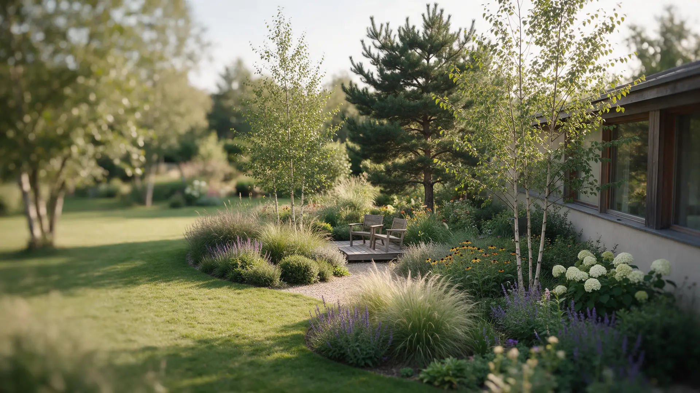
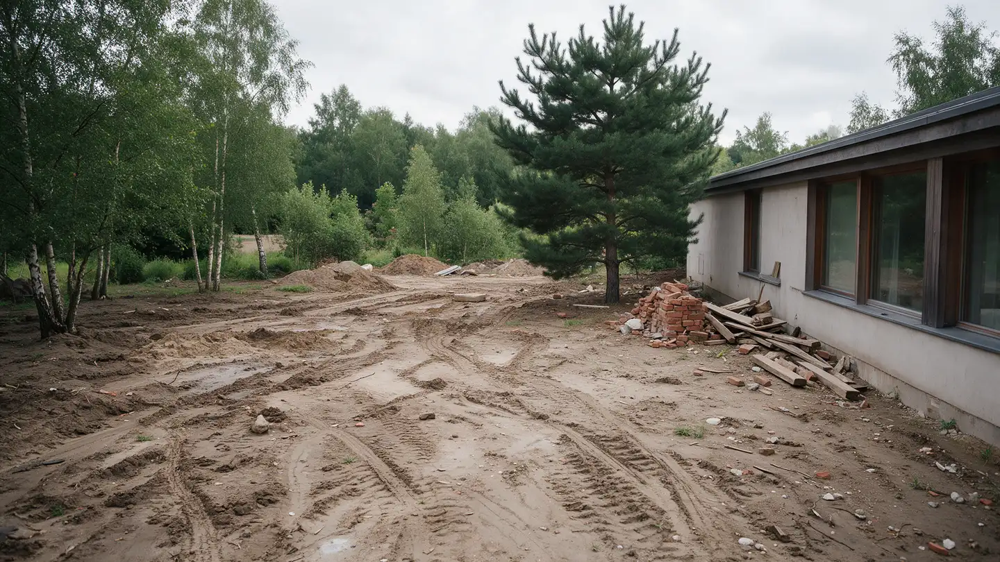
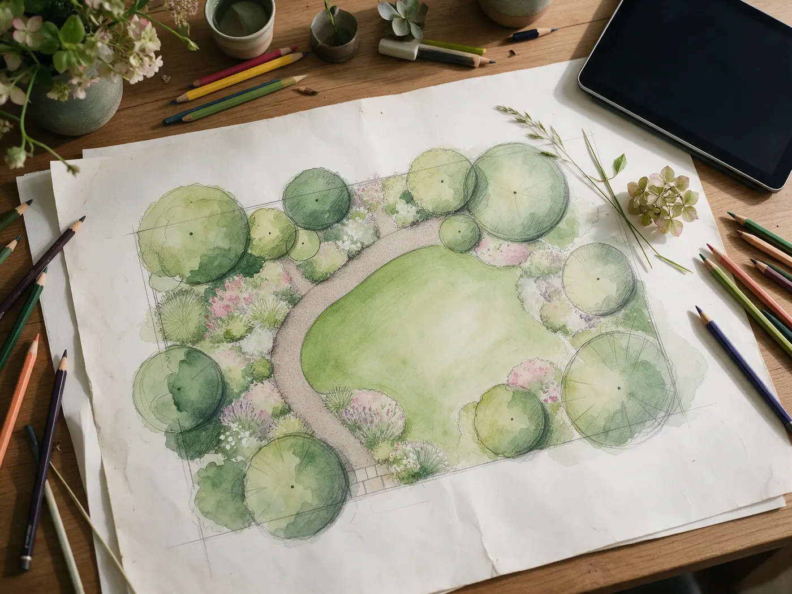

Ландшафтный дизайн загородных участков в {{городе}}
Проект с визуализацией до начала работ, растения под наш климат и ваш уход, смета по этапам – и сад, который красив круглый год.
От глины после стройки – к саду
Почти каждый участок начинается одинаково: колеи, строительный мусор, бурьян. Через год на том же месте – газон, дорожка, терраса и посадки, за которыми несложно ухаживать.
- Площадь {{N}} соток, {{сроки работ}}
- Дренаж и выравнивание перед посадками
- Растения, которые зимуют в нашей полосе
В демо – иллюстрация. На сайте здесь ваши реальные проекты «до и после».

Красивый не только в июле
Май
Первыми просыпаются луковичные: тюльпаны и нарциссы вдоль дорожки, свежая зелень газона и молодые листья берёз.

Сначала вы видите сад – потом мы его сажаем
- Выезд на участок {{цена или бесплатно}}Смотрю почву, свет, уклон и соседей, замеряю, обсуждаем, как вы будете жить в саду.
- КонцепцияДва-три варианта планировки: где газон, терраса, дорожки, тень и уединение.
- Проект и визуализацияПлан посадок, разбивочный чертёж и 3D-вид сада – видно, как он будет выглядеть в каждом сезоне.
- Смета по этапамРастения, материалы и работы отдельными строками. Можно делать сад в несколько сезонов.
- РеализацияПодготовка участка, дренаж, дорожки, посадки, газон – своей бригадой или с вашими подрядчиками.
- Уход и авторский надзорПервый год приезжаю по графику, подсказываю, что и когда делать: {{условия ухода}}.
Можно заказать весь сад или один этап
- Консультация на участкеВыезд, осмотр, первые идеи и ответы на вопросы{{цена}}
- Эскизный проектКонцепция планировки и подбор растенийот {{цена}} ₽/сотка
- Полный проект с 3DПлан посадок, чертежи, визуализация по сезонам, ведомость растенийот {{цена}} ₽/сотка
- Озеленение и благоустройствоПодготовка участка, дорожки, газон, посадкипо смете
- Уход за садомСезонные работы, обрезка, подкормки, подготовка к зимеот {{цена}} ₽/мес
Точная стоимость зависит от площади и задач – назову её после выезда, до начала работ.
Что спрашивают чаще всего
Когда лучше начинать?
Проект удобно делать осенью и зимой, тогда весной сразу начинаются работы. Посадки – весной и в начале осени.
Сколько стоит сад целиком?
Зависит от площади, рельефа и того, что вы хотите: газон и дорожки или сад с террасой и водоёмом. После выезда даю смету по этапам – можно растянуть работы на несколько сезонов.
Мне некогда ухаживать за садом – что делать?
Скажите это на старте. Подберу растения, которым хватит полива по таймеру и пары визитов садовника за сезон.
Работаете с уже готовым садом?
Да: можно сохранить хорошие деревья и кустарники и переделать то, что не нравится.
Даёте гарантию на растения?
{{условия гарантии приживаемости}}
Расскажите про свой участок
Пришлите пару фото и площадь – отвечу в течение дня и предложу время выезда.
- Телефон
- {{телефон}}
- Telegram
- {{ник}}
- {{номер}}
- Работаю
- {{город}} и область, до {{N}} км
Посмотрю фото и отвечу в течение дня – предложу время выезда.
В демо заявка никуда не уходит. На сайте она придёт на почту или в Telegram вместе с фото.